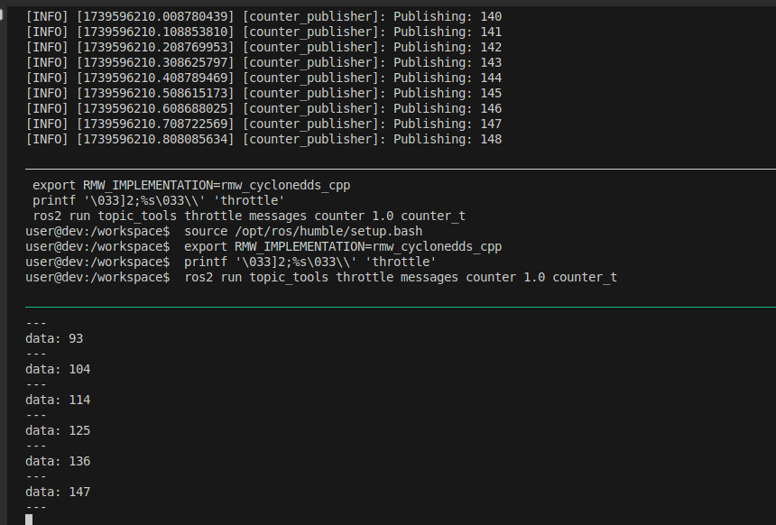

package
ros
throttle
tools
topic
Tools for directing, throttling, selecting, and otherwise manipulating ROS 2 topics at a meta-level. These tools do not generally perform serialization on the streams being manipulated, instead acting on generic binary data using rclcpp's GenericPublisher and GenericSubscription
github
Relay: Subscribes to a topic and republishes to another.
RelayField: Republishes data in a different message type.
Transform: Manipulates a topic or a field and outputs data on another topic.
Throttle : Republishes data with bandwidth or rate limit.Drop: Republishes by dropping X out of every Y incoming messages.
Mux : Multiplexes incoming topics to an output.Delay: Delays and republishes incoming data.
Throttle
Throttle is ROS 2 node that subscribes to a topic and republishes incoming data to another topic, either at a maximum bandwidth or maximum message rate.
Rate (throttle message)
run topic_tools throttle messages <in topic> <msgs_per_sec> [ out topic]
Demo
Decrease incoming topic rate
Node that publish counter data at 10hz
topic tool throttle republish message at 1hz
Topic echo to view to throttle output
counter_publisher.py #!/bin/python3
import rclpy
from rclpy.node import Node
from std_msgs.msg import Int32
class CounterPublisher ( Node ):
def __init__ ( self ):
super () . __init__ ( 'counter_publisher' )
self . publisher_ = self . create_publisher ( Int32 , 'counter' , 10 )
self . counter = 0
self . timer = self . create_timer ( 0.1 , self . timer_callback )
def timer_callback ( self ):
msg = Int32 ()
msg . data = self . counter
self . publisher_ . publish ( msg )
self . get_logger () . info ( f 'Publishing: { msg . data } ' )
self . counter += 1
def main ( args = None ):
rclpy . init ( args = args )
node = CounterPublisher ()
rclpy . spin ( node )
node . destroy_node ()
rclpy . shutdown ()
if __name__ == '__main__' :
main ()
topic_throttle.yaml session_name : my_session
windows :
- window_name : my_window
layout : even-vertical
shell_command_before :
- source /opt/ros/humble/setup.bash
- export RMW_IMPLEMENTATION=rmw_cyclonedds_cpp
panes :
- shell_command : #
- printf '\033]2;%s\033\\' 'pub'
- python3 /workspace/src/g_stream/scripts/counter_publisher.py
- shell_command : #
- printf '\033]2;%s\033\\' 'throttle'
- ros2 run topic_tools throttle messages counter 1.0 counter_t
- shell_command : #
- printf '\033]2;%s\033\\' 'sub'
- ros2 topic echo /counter_t
output

Mux
Mux is a ROS2 node that subscribes to a set of incoming topics and republishes incoming data from one of them to another topic
run topic_tools mux <outopic> <intopic1> [ intopic2...]
Demo
Subscribe to multiple (two) image source and select between them using MuxSelect service
Using gscam package to create image source
topic_mux.yaml session_name : my_session
windows :
- window_name : my_window
layout : even-vertical
shell_command_before :
- source /opt/ros/humble/setup.bash
- export RMW_IMPLEMENTATION=rmw_cyclonedds_cpp
panes :
- shell_command : #
- printf '\033]2;%s\033\\' 'source1'
- export GSCAM_CONFIG="videotestsrc ! video/x-raw,width=640,height=480,framerate=30/1 ! videoconvert"
- ros2 run gscam gscam_node --ros-args -r /camera/image_raw:=image1
- shell_command : #
- printf '\033]2;%s\033\\' 'source2'
- export GSCAM_CONFIG="videotestsrc pattern=snow ! video/x-raw,width=640,height=480,framerate=30/1 ! videoconvert"
- ros2 run gscam gscam_node --ros-args -r /camera/image_raw:=image2
- shell_command : #
- printf '\033]2;%s\033\\' 'mux'
- ros2 run topic_tools mux out_image image1 image2
- shell_command : #
- printf '\033]2;%s\033\\' 'mux'
- ros2 run rqt_image_view rqt_image_view out_image
- shell_command :
- printf '\033]2;%s\033\\' 'control'
- ros2 service call /mux/list topic_tools_interfaces/srv/MuxList "{}"
# - ros2 service call /mux/select topic_tools_interfaces/srv/MuxSelect "{topic: 'image2'}"